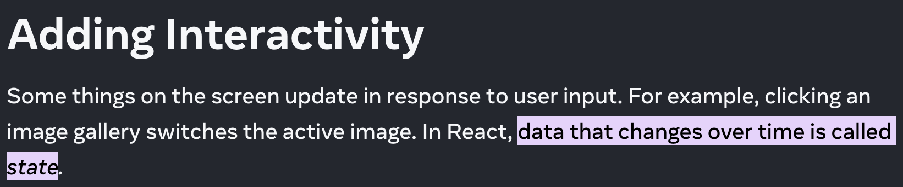
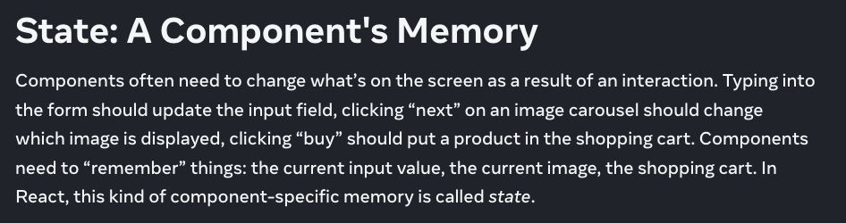

State management in React
AI suggested titles
- "State of Confusion: A Developer's Guide to Taming the Frontend Chaos"
- "The State of the Union: How I Learned to Stop Worrying and Love React State"
- "State Your Business: A Comedy of Errors in Frontend Management"
- "50 States of React: A Cross-Country Tour of State Management"
- "State of Mind: Therapy for Your Frontend Architecture"
- "To State the Obvious: Why We Keep Reinventing State Management"
- "In a State of Flux: The Evolution of Frontend State Management"
- "State of Emergency: Rescuing Your App from Redux Overload"
- "The Stateful Eight: A Tarantino-Inspired Guide to Managing Your Frontend"
- "Statefully Yours: A Love Letter to Predictable UI"
Intro
What state is and isn't
History of state
Types of state
State management tools
What state is
 State vs Props
State is controlled by the component itself
Props are passed in from a parent component
State is mutable, props are immutable
What state isn't
Is it passed in from a parent component?
Can you compute it from existing state or props?
Unidirectional data flow
Unidirectional data flow
You can also pass functions down as props
History
MVC -> Flux at Facebook
Facebook at Hacker Way conf in 2014Redux
Single source of truth
Immutability
Predictable state changes through reducers
Too much?
Put form state in the Redux store
Combine reducers into a single reducer
Put all of your server data in a store
Use immer to force immutability
Use thunks or sagas to manage async actions
Directly connect your react router state to a Redux store

Types of state
Local state
State that is only relevant to a single component
(you can also share this within a tree of components... at a price)
Global state
State that is shared across the entire app
(or, between many components)
Server state
Data that we fetch from a server
Form state
Where we store everything related to a single form
Input values
Validation functions
Form errors
URL state
State that you want to persist as part of the URL
Applied filters
Current page
Sorting
- Black or green color
- Slim or regular fit
- Hiking or climbing sport
- Nano puff
State management tools
React state management
Third party state management
Built-in state management in React
useState
useReducer
useContext
useState
The most basic form of state management in React
tricks + gotchas
Functional updater
Putting props in state
The initial value is always discarded on re-renders
Lazy initializer
useReducer
useState
useContext
A way to "subscribe" to context in your application
(the closest thing to global state in React, natively)
tricks + gotchas
Making Context fail loudly
If context updates, all of the children that use it will re-render
Third party tools
Redux
Predictable, maintainable state management
redux.js.orgZustand
Like Redux but no providers
zustand.docs.pmnd.rsState is one object (top down)
Usually used as a single store
Unopinionated implementation
Lots of integrations / extensions
Jotai
An atomic approach to state management
jotai.orgPrimitive, composable atoms (bottom up)
Unopinionated implementation
Lots of integrations / extensions
Tanstack Query
Network state management in React
tanstack.com/queryData fetching, caching, and syncing
Helpful intermediate network states
Great devtools
Kind of handles everything for you
React Hook Form
Form state management
react-hook-form.comForm state management
Performant, flexible, light
Easy to integrate into existing UIs
XState
State machines
https://stately.ai/docs/xstateWheres the URL libraries???
URLSearchParams
URLSearchParams
(It takes a little extra work)
Nuqs
URLSearchParams
validateSearch API + zod
useSearchParams
(Which is just URLSearchParams)
URLSearchParams
(with some extra work, probably)